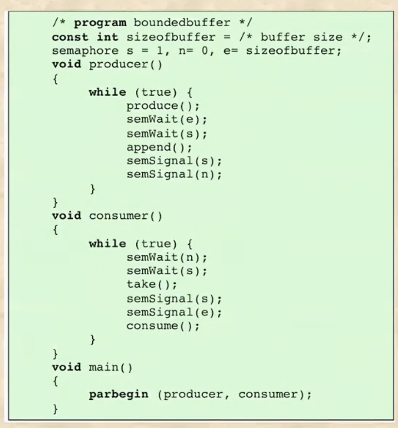

충남대학교 컴퓨터공학과 류재철 교수님의 "운영체제 및 실습" 강의를 필기한 내용입니다.
다소 잘못된 내용과 구어적 표현 이 포함되어 있을 수 있습니다.
Semaphore란?
- 자료형이다
- 0이상의 정수로 초기화되는 것, 1을 빼는 것(sem_wait), 1을 더하는 것(sem_signal, sem_post) 세개의 연산만 가능하다
- sem_wait가 값을 1 뺀다는 것은 프로세스 하나가 critical section에 들어가서 공유변수에 접근할 수 있는 프로세스의 갯수가 하나 줄어들었다는 의미를 가진다
- 반대로 sem_signal가 값을 1 추가시킨다는 것은 프로세스 하나가 critical section에서 나와서 공유변수에 접근할 수 있는 프로세스 하나가 더 늘었다는 의미를 가진다
- critical section을 넓게 잡으면 굳이 concurrency문제가 발생하지 않는데도 다른 프로세스들이 블락을 먹으므로 최대한 좁게 잡아서 context change가 원활하게 이루어지게 하는 것이 중요하다
- 세마포 변수가 0일 경우에 다른 프로세스가 sem_wait()함수를 실행시키게 되면 이 프로세스에서의 세마포 변수는 음의 값을 갖고 이 경우에 이 프로세스는 waiting queue에 들어가게 된다
- 따라서 세마포 변수가 음의 값을 가질 때 이것의 절대값은 큐에서 대기하는 프로세스의 갯수를 의미하게 된다
- 그리고 sem_signal()함수가 호출되면 세마포 변수를 하나 증가시키고 큐에서 한놈을 wait에서 깨운다 - 즉, critical section에 들어있던 프로세스가 하나 사라져 가장 처음에 큐에 들어온(FIFO)프로세스를 깨워 critical section에 넣게 되는 것이다
- 공유변수에 접근하는 것을 제한하는 용도로의 세마포는 당연히 0과 1의 값만 가져야 되므로 binary semaphore를 사용한다
- 근데 좀 더 사용처를 넓혀서 예를 들면 10명 이하의 유저가 게임에 접속하는 것만을 허용한다 뭐 이런 경우에는 세마포 변수의 초깃값을 10으로 잡아서 활용하는것도 가능하다
- 그리고 초깃값을 0으로 잡아주면 실행순서를 조절하는 것도 가능하다 - 초깃값이 0이면 이 세마포를 sem_signal()해주는 프로세스가 반드시 선행되어야 해당 세마포를 sem_wait()해주는 프로세스가 동작할 수 있는것 - 하나의 세마포가 반드시 하나의 프로세스에서 semWait, semSignal돼야되는건 아니다
- sem_signal시에 깨우는 순서를 FIFO로 하는 경우를 strong semaphore이라고 하고 깨우는 순서를 랜덤하게 하는 경우를 weak semaphore라고 한다
- 여기서 주의할 점은 critical section을 공유하는 애들 중 여기에 들어가는 프로세스의 갯수가 제한되어 있는 거지 normal execution의 경우에는 critical section과 parallel하게 작동할 수 있다
Producer & Consumer(Bounded Buffer)
- 세마포를 이용해 해결할 수 있는 대표적인 예시
- 봐봐라
- 제한된 갯수의 버퍼가 있고
- 제한된 갯수의 producer 프로세스, 하나의 consumer 프로세스가 존재한다
- 그리고 버퍼공간 통틀어 한번에 하나의 프로세스만 접근할 수 있다
- 빈 버퍼에만 producer가 접근할 수 있다
- 비지 않은 버퍼에만 consumer가 접근할 수 있다 - consumer는 destructive read작업(읽으면 자동으로 지워지는)을 수행한다
- 다음은 이 문제의 해결법이다

- 근데 봐봐라
- 만약에 semWait 두개의 순서가 바뀌면 어떤일이 일어나느냐
- producer의 경우에는 만약 버퍼가 다 차있는 상태라면 semWait(s)를 통해 s를 0으로 만들었는데 마침 semWait(e)를 했더니 e가 -1이 되게 된다
- 그러면 얘가 이상태로 자게 되는데 그럼 입이 돌아간다
- 왜냐면 얘가 s를 하나 먹고 자므로 e를 올려줄 수 있는 consumer도 접근을 못하게 돼 둘 다 자게 되는 것이다
- 이러한 경우를 deadlock 이라고 한다
- consumer의 경우에도 semWait의 순서를 바꾸면 둘 다 입돌아가게 된다
- 이렇듯 semWait의 경우에는 순서가 아주 중요하다 - 약간 보니까 실행순서나 참여 프로세스 갯수 제한이 아닌 상호배제의 용도로의 semaphore는 다른 용도로의 semaphore보다 늦게 - 딱 그 공유공간에 접근하기 바로 직전에만 - lock을 걸어줘야 되는듯
- 하지만 semSignal의 경우에는 잠에서 깨워주는 역할을 하므로 순서가 바뀌어도 된다
Massage Passing
- 얘는 그냥 프로세스들 간에 메세지를 주고받으며 동기화를 하는 방법이랜다